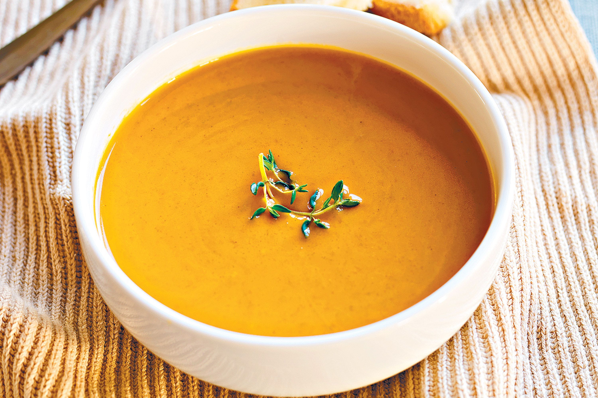

Pumpkin soup

Description
This is a classic, easy pumpkin soup made with fresh pumpkin that is very fast to make. Thick, creamy and full of flavour, this is THE pumpkin soup recipe you will make now and forever!
Ingredients
- Pumpkin
- Onion and garlic
- Stock/broth and water
- Milk, cream
Steps
- Place peeled pumpkin, onion, garlic, broth/stock and water into a pot;
- Boil rapidly for 15 minutes until pumpkin is very tender;
- Use a stick blender or transfer to blender to blitz smooth
- Adjust salt and pepper to taste, then add either milk OR cream, whichever you prefer.